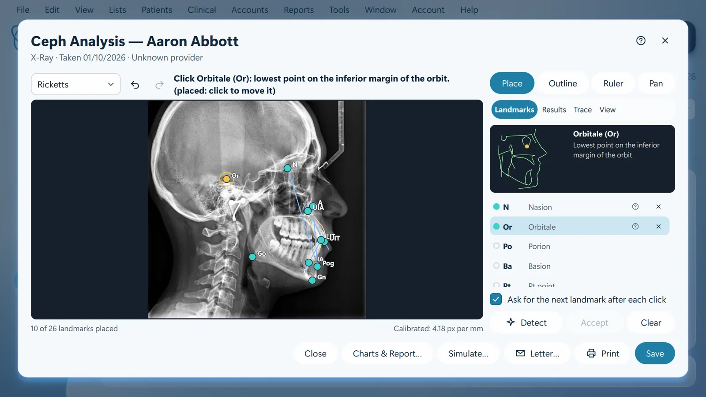
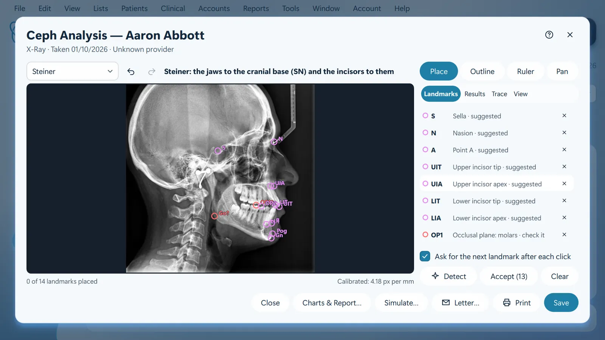
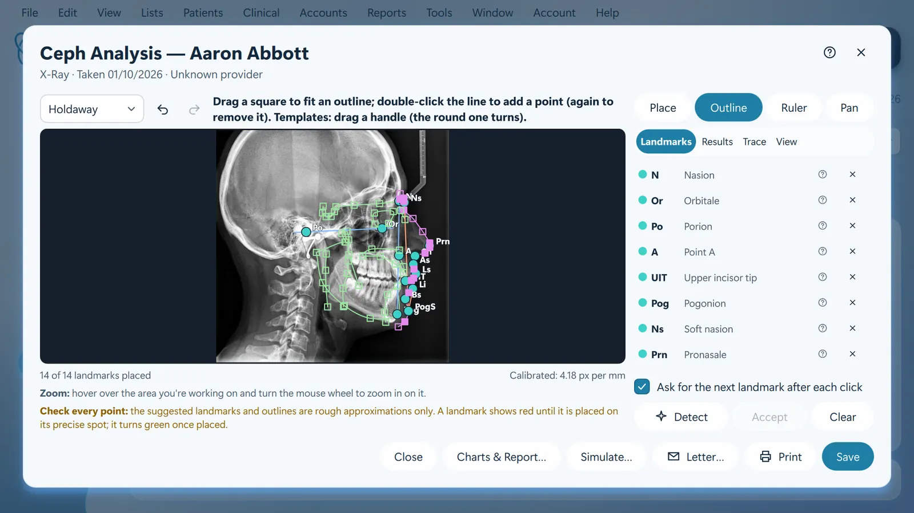
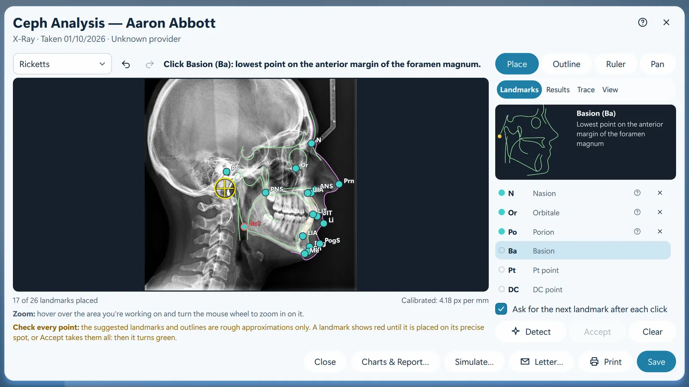
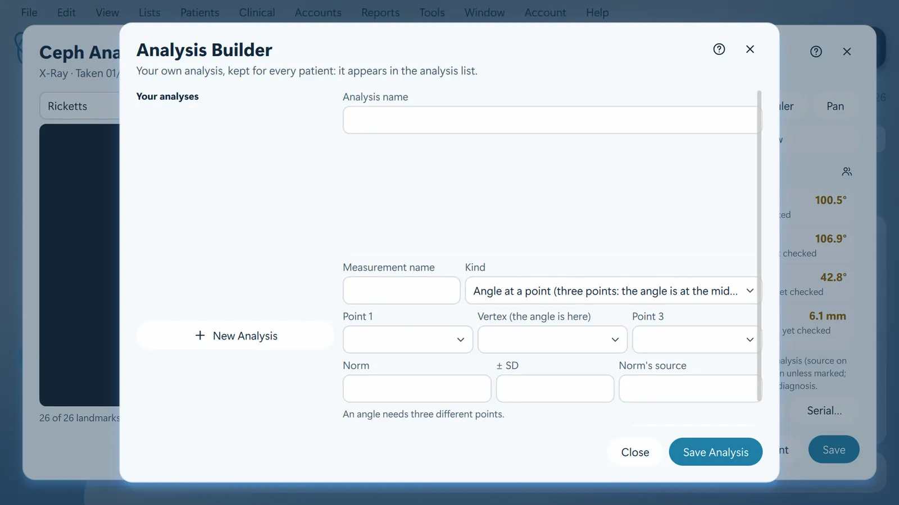
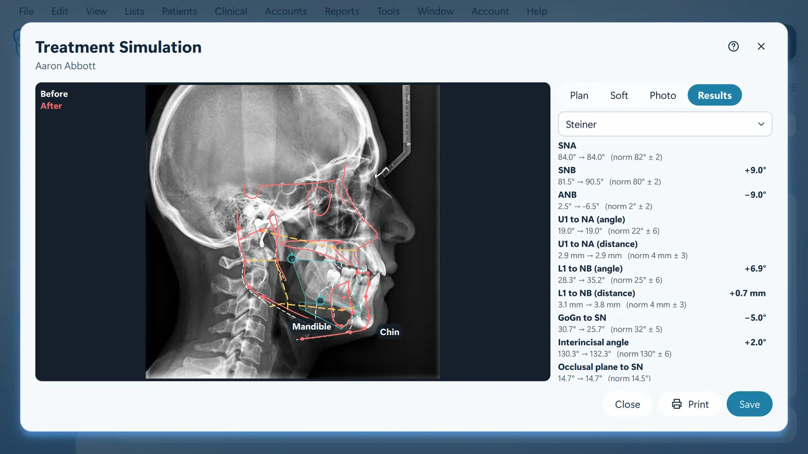
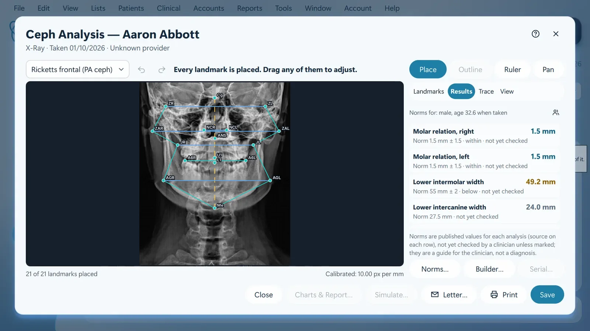
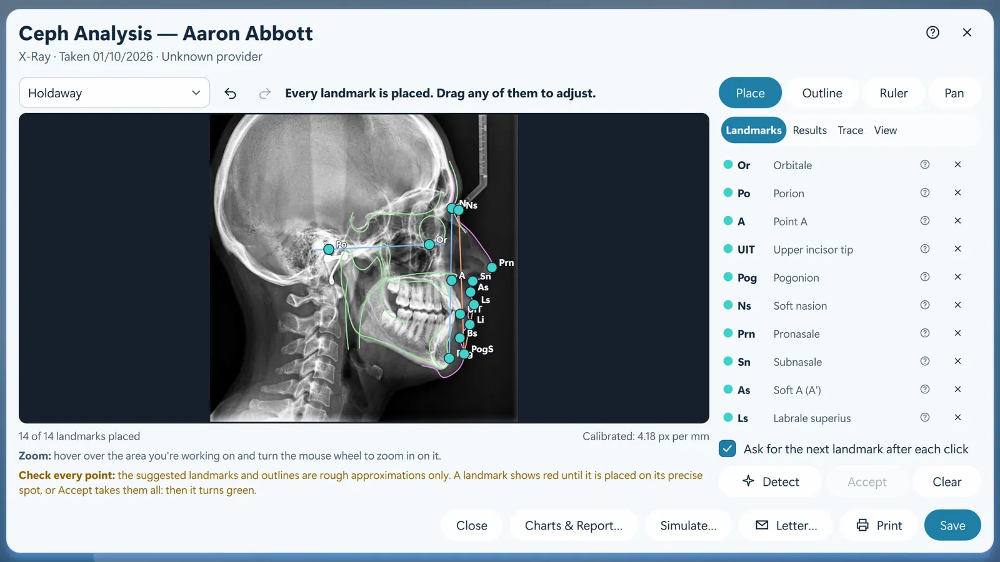
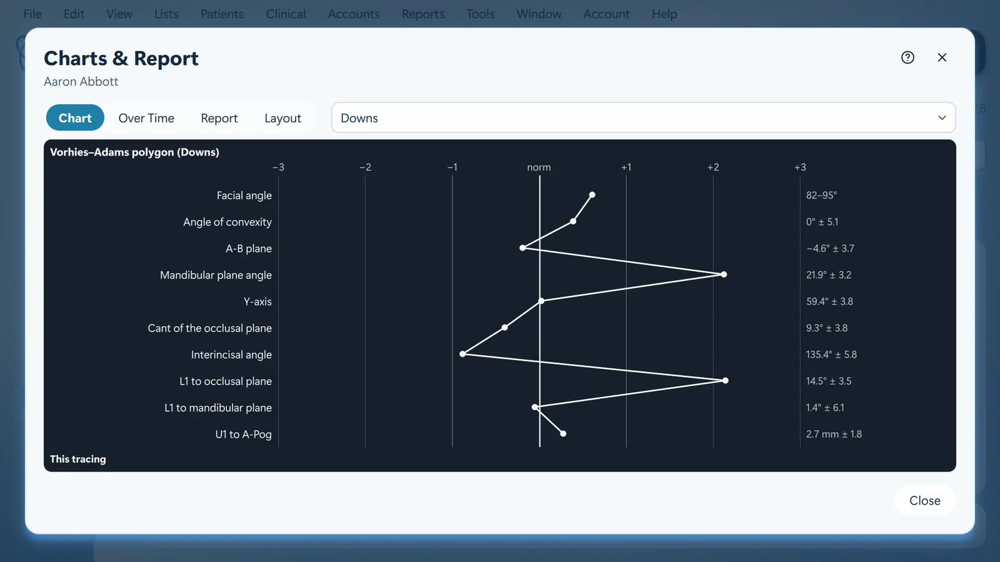

01 / 09 · Ceph analysis Standard with Ortho · add-on for Dental
Tracing a lateral ceph
Imaging → Ceph Tracing
Open the patient's ceph, pick an analysis, and DentaCore asks for each landmark in turn.
- A reference picture and a short description for every landmark, and a ring showing where it usually is on this X-ray.
- Click to place, drag to adjust, nudge with the arrow keys. Undo and redo throughout.
- Press U to mark a landmark uncertain. It's flagged in the results and on the printout.
- The loupe magnifies under the pointer and shows the X-ray alone over a mark, so the mark never hides the anatomy.
- Hover and turn the wheel to zoom where you're working.
- The analysis's lines appear once all its landmarks are placed.

02 / 09 · Ceph analysis Standard with Ortho · add-on for Dental
Detect: landmark suggestions to check
Ceph window → Detect
Detect suggests positions for 26 landmarks in about a second: the skull base, the jaws, the incisors, the occlusal plane and the soft-tissue profile.
- Each suggestion is a small red dot that takes no clicks, so you can place a landmark right on top of it.
- Each one says how likely it is to be within 2 mm of where an orthodontist would put it. The less certain ones are marked “check it” and named first.
- Nothing is measured from a suggestion until you accept it. One accepted without moving stays marked uncertain until you're happy with it.
- A landmark far from where the others put it is marked ? until you look.
- Built by DentaCore from the open Aariz dataset (1,000 cephs from seven X-ray machines, CC BY 4.0). A practice can use its own model instead.
- Detect is an aid for the clinician. Every point is checked and accepted by a person.

03 / 09 · Ceph analysis Standard with Ortho · add-on for Dental
Calibration and digitising aids
Ceph window → Ruler
Measurements in millimetres need a calibrated image, and DentaCore gives you two ways.
- Draw a line along the ceph's ruler, or take the scale from the DICOM header.
- Correct for the film's magnification.
- Page Up and Page Down step through the landmarks; Delete clears one; click one in the list to place it again.
- View settings for brightness, contrast, names and lines.

04 / 09 · Ceph analysis Standard with Ortho · add-on for Dental
Outlines and the soft-tissue profile
Ceph window → Outline · Trace
Once the landmarks are in, DentaCore draws the anatomy through them the way a tracer would.
- Sella and clivus, the cranial base, frontal and nasal bones, orbit, pterygomaxillary fissure, palate and maxilla, the whole mandible from the coronoid round the condyle to the symphysis, and the airway.
- Tooth templates for the incisors and first molars.
- Each structure is fitted only to its own landmarks, so a stray point elsewhere can't bend it, and the curve never loops.
- The soft-tissue profile is found on the ceph itself, from the brow round the nose, lips and chin to the throat, kept just in front of the bone and teeth.
- Drag any outline point, double-click to add one, right-click to straighten a piece of the profile.
- Outlines carry into the superimposition, the simulation and the photo morph.

05 / 09 · Ceph analysis Standard with Ortho · add-on for Dental
Twenty analyses, and your own
Ceph window → Analysis
Pick the analysis at the top left, or build one of your own.
- Steiner, Tweed, Ricketts, McNamara, Wits, Downs, Jarabak / Björk, Burstone (COGS), Legan, Holdaway, Arnett (STCA), Harvold, Sassouni and Rakosi on a lateral ceph.
- Ricketts frontal and Grummons on a PA ceph.
- Builder: an angle at a point, between two lines, a distance, a distance to a line, along or across a line, or a ratio, each with its own norm.
- Your own analyses appear in the list for every tracing.

06 / 09 · Ceph analysis Standard with Ortho · add-on for Dental
Results and norms you can check
Ceph window → Results · Norms
Every measurement is shown with its value, the norm (mean ± SD) and whether it's within, above or below.
- Norms chosen for the patient's sex and age when the ceph was taken, and changeable for ethnicity.
- Every norm table shows each value's published source and whether a clinician has checked it.
- Add your own population's norms.
- Review Sheet exports every norm as a spreadsheet for your orthodontist to check. Import Review reads their answers back, previews the changes, and records who checked what.
- The analyses and norms are a guide for the clinician, not a diagnosis.

07 / 09 · Ceph analysis Standard with Ortho · add-on for Dental
Frontal (PA) ceph
Ceph window → Ricketts frontal · Grummons
Trace a postero-anterior ceph for transverse problems and asymmetry.
- Right and left are always the patient's, whichever way round the film is shown.
- Ricketts frontal: molar relation each side, intermolar and intercanine widths, dental midlines, maxillary and mandibular widths, occlusal plane tilt and postural symmetry, with norms for age.
- Grummons: a midsagittal reference and each side measured against it, including menton and midline deviation, tipping of each pair of points and the ramus and body on each side.
- The midline is drawn dashed.

08 / 09 · Ceph analysis Standard with Ortho · add-on for Dental
Serial tracings and superimposition
Ceph window → Serial
Lay every traced ceph of the patient over each other, each in its own colour.
- Register on SN at S, Ricketts' five areas, ABO, or best fit.
- Show landmarks, lines and outlines as you like.
- Movement says how far each landmark moved between tracings, forwards and down, in millimetres.
- Measurements shows each value over time. Name each tracing, such as “T1 start”.
- Print the superimposition as a PDF.

09 / 09 · Ceph analysis Standard with Ortho · add-on for Dental
Charts and the case report
Ceph window → Charts & Report
Turn a tracing into something to present.
- The wiggle chart: Vorhies–Adams and Björk–Jarabak polygons.
- Measurements over time across every tracing.
- One-click case report PDF with the traced X-ray, results and charts.
- Presentation layouts with a title for showing the patient.
- Save charts and the traced X-ray as PNG for letters and slides.
